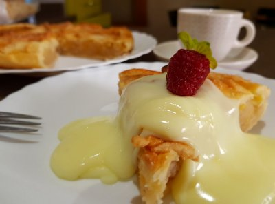

Swedish Apple pie

Swedish styled apple pie with vanilla sauce
Description
This Swedish Apple Pie recipe is just as easy to make as it is delicious to eat.
This crustless apple pie is full of fresh tender apples and loaded with warm cinnamon.
It’s the perfect no-fuss pie for an easy dessert or for the beginner baker!
Once you dig into this pie the last thing your going to complain about
is that it doesn’t have a pie crust! When it bakes it creates a sweet thick filling
that surrounds cinnamon-flavored baked apples under a flaky top. Add a scoop of ice cream and it’s going to be a regular in your recipe arsenal too.
Ingredients
Pie filling
- 5 Granny smith apples
- 1 tbsp sugar
- 1 tsp ground cinnamon
Topping
- 1 cup flour
- 1 cub sugar
- 3/4 cup butter
- 1 pinch salt
Steps
- Preheat oven to 325°F
- Peel, core, and slice apples 1/4″ thick. Fill pie plate 2/3 full.
Sprinkle with 1 tablespoon of sugar and 1 teaspoon of ground cinnamon
- In a medium-sized bowl, combine the topping ingredients. Spread
over the apples in the pie plate
- Bake for 1 hour or until crust lightly browns
- Enjoy with some vanilla sauce
- Cover leftovers with aluminum foil and refrigerate